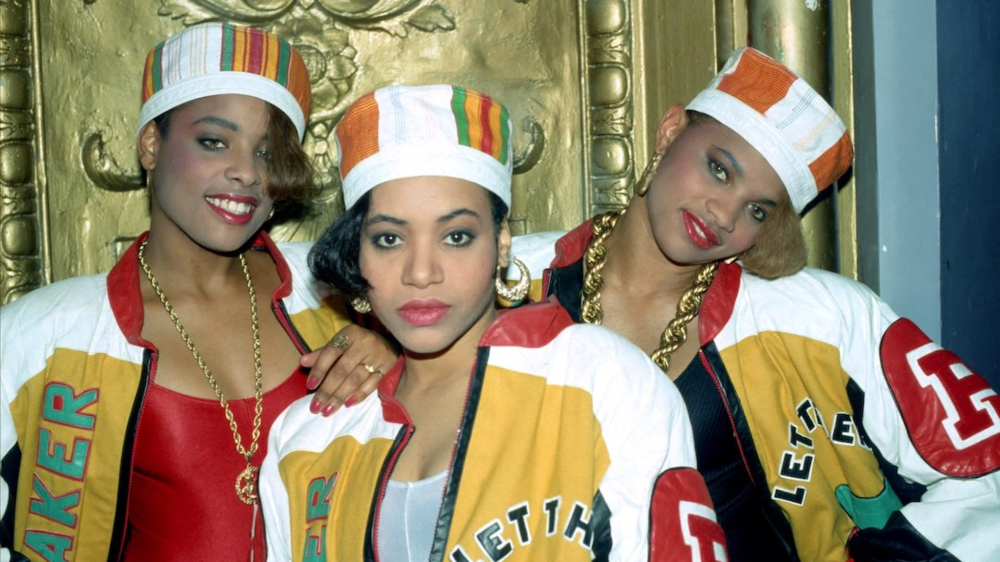

Salt-N-Pepa
BLACK FEMALE ICONS
HISTORY:
FORMATION OF
SALT-N-PEPA

HUFFINGTON POST | DANA OLIVER

Cheryl and Sandra both New York City natives, met while studying Nursing at Queensborough Community College. (wiki). The two became close friends, and soon after meeting, met Hurby “Luv Bug Azor", who was studying record production at the Center of Media Arts at the time. The trio soon produced the single “The Showstoppa”. This would be the first single from the infamous NYC chart-topping group group, Salt-N-Pepa.
MICHAEL OCHS ARCHIVES/GETTY IMAGES
After the single release, the goru signed to Next Plateau Entertainment, now known as Next Plateau Records, releasing their debut album Hot, Cool & Vicious in 1986. The following year, 15 year old DJ Deidra “Spinderella” Roper was recruited into the group. Coming into the very male heavy world of 90’s Hip Hop, these three ladies, with the management of Hurby Azor, Salt’s then boyfriend, would come to be known as the showstopping Salt-N-Pepa. They would make history as one of the first female rap groups ever; the “first ladies” of rap.
In the very male heavy world of 90’s Hip Hop, these three ladies
would come to be known as the showstopping Salt-N-Pepa.

SEX POSITIVITY
IN MUSIC

PHOTO FROM IMGUR
They redefined the word tramp, which prior to the song, would be used to refer to women as “loose” pr “sexually promiscuoius”. The group used redefined it to descrobe the aggressive means by which men often approach and hit on women in nightclubs (icon). This does more than make a ctahcy commercially successful song, it offers a cirtique of the double standard that exists for men and women in terms of sexual expression and engagement in sexual acts. It radically reclaims the once deroogsrotry term, tranfroming itno something to to hold men accountable for patriarchy endoresed abuse and harassment of omen. (icons)
LEGACY
OF THE DUO

TUMBLR | @QUEENSOFRAP
The group racked in commercial sales in its formative years, with their debut and 3rd albums Hot, Cool, & Vicious acquiring platinum status, their second album A Salt with a Deadly Pepa reaching gold status, and reaching #1 of various RnB and Hip Hop charts. Not to mention several Grammy nominations, and one Grammy win. Songs such as “Let’s Talk About Sex” and “Push It” would shape the legacy the group would leave, as a femme rap group making art about feminity and sex unapoloogetically.